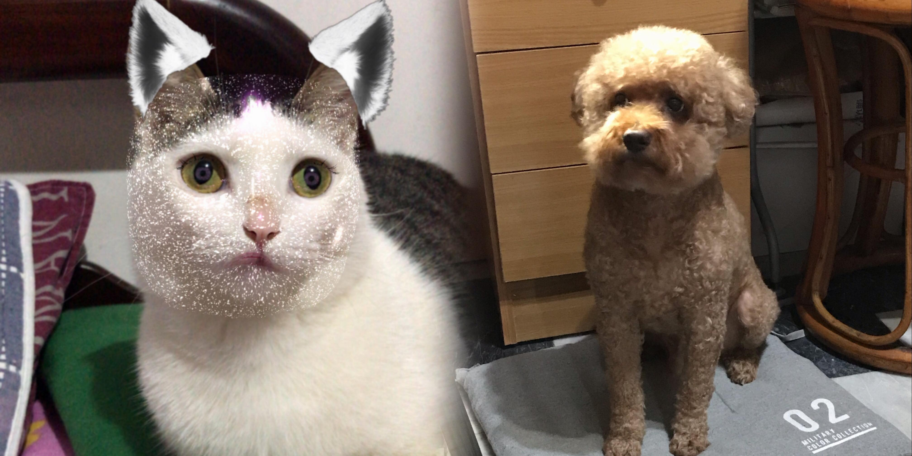

小家人
這兩位是我的小家人，一位是老狗球球，一位是年輕的小妮子。
球球陪伴我們很多年了，大概13歲了吧。年輕時脾氣很暴躁，我跟他非常處不來，全家人他最針對我，雖然我覺得自己很沒有動物緣，但是他對我的態度真的太差了，以至於我跟他的交流一直都不頻繁。直到他年紀愈來愈大，個性也變得溫和多了。從前的球球看到體型比自己大幾倍的大狗，會毫不猶豫衝向前示威，然後再夾著尾巴逃回來，所以我說是不是超欠打的白目狗。現在的球球就像去信仰了佛教，與世無爭，甚至小妮子進入我們家後，朝他揮爪、抓他，球球也完全不反擊，只是叫了幾聲然後迴避，簡直性情大變。現在的我跟球球感情非常好，他也很常跑來找我撒嬌，是什麼可愛的生物我的天。球球非常愛吃。

小妮子是我媽在路邊救起的一隻瀕死小貓，當時還不到1個月大，是一隻非常瘦弱的小貓，來我們家後有慢慢變健康了，雖然還是很瘦。我們跟她相處的時間非常短，因為家庭因素，所以她後來就拜託我媽的朋友照顧了。一開始我們都很不歡迎小妮子的加入，因為她實在是太不討喜了，環境破壞狂，把我跟我妹很多東西都咬壞，甚至還有衣服。起床或出門回家，都會發現地板杯盤狼藉。還是個超級挑食者，我好心幫她製作雞蛋大餐，還給我不吃，結果隔天她把我要吃的雞蛋偷吃掉了。但她吃東西超級斯文，小口小口慢慢吃，球球一直都是狼吞虎嚥。她會在我媽面前裝可愛！簡直就是小天使，在我和我妹面前就原形畢露，以至於我們每次的告狀都很沒說服力。雖然發生了很多事，但隨著相處時間變長，感情也在累積，最後妮子被送走的時候很不捨，到現在還是很想她。

其實我以前在路上看到動物，或是在網路上看到貓狗的照片、影片，都沒什麼太大的感覺，但自從跟球球感情變好後，看到狗就會心花怒放，真的很神奇，當然貓的狀況也一樣。希望不管在哪裡，你們都能幸福。